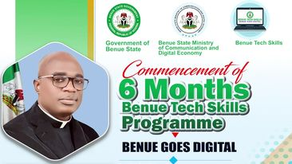

What is Benue Tech Skills
Benue Tech Skills is an initiative designed to promote technological skills and digital literacy among the youth and broader population of Benue State, Nigeria. This program aims to equip individuals with the necessary skills to thrive in the modern digital economy. Here are some key details about Benue Tech Skills

Objectives
Skill Development: Provide training in various tech skills such as coding, digital marketing, graphic design, web development, and data analysis.
Empowerment: Empower the youth with skills that can lead to self-employment and entrepreneurship.
Employment: Enhance employability by providing industry-relevant skills that meet the demands of the job market.
Innovation: Foster a culture of innovation and creativity within Benue State.
Program Structure
Benue Tech Skills offers a range of programs, catering to different interests and skill levels:
Digital marketing & e-commerce
Advanced data analytics,
Data science & analysis,
UI/UX,
Frontend development and backend development.
Delivery Methods
Online Courses: Flexible, self-paced learning modules available online.
In-Person Training: Classroom-style training sessions held at local centers or educational institutions.
Future Goals
Expansion: Increasing the reach of the program to more areas within Benue State and beyond.
Advanced Courses: Introducing more advanced and specialized tech courses to keep up with industry trends.
Mentorship Programs: Establishing mentorship opportunities for participants to connect with industry professionals.

How it helped me
Benue Tech Skills is significantly enhancing my digital skills through its comprehensive and structured learning programs.
Hands-on projects and practical assignments simulate real-world scenarios, allowing me to build a strong portfolio and gain practical experience.
The supportive community and networking opportunities foster collaboration and continuous learning, while up-to-date resources ensure I stay current with the latest industry trends.Benue Tech Skills is providing me with the knowledge, practical experience, and support needed to excel in the digital world.

My Profile